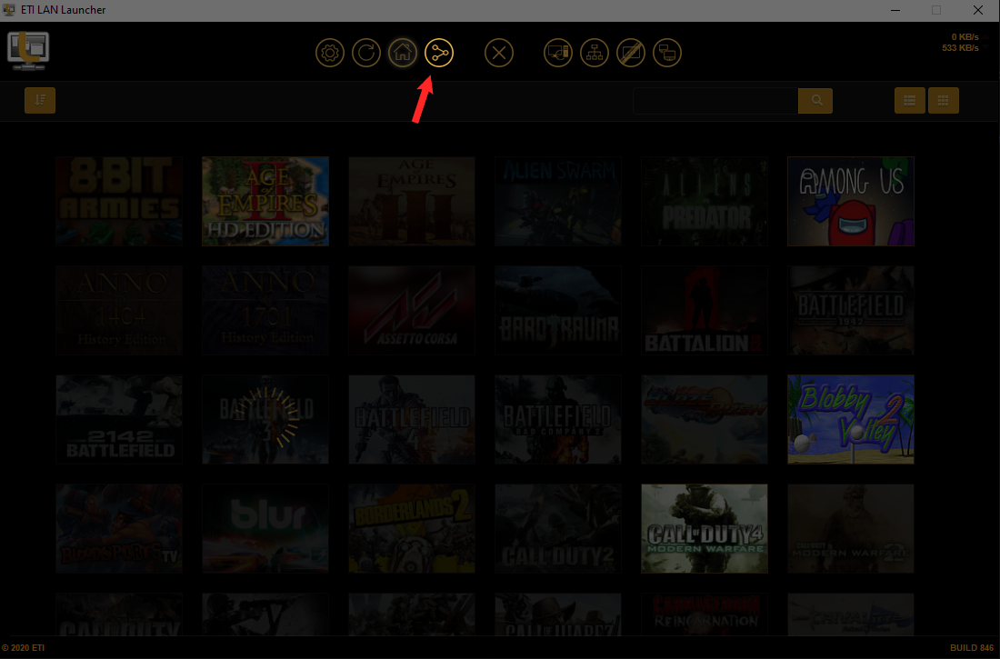

Um das Sync Interface aufzurufen klickt bitte auf folgendes Icon im
ETI Launcher

Einfach rechtklick auf den Packagenamen des Spiels -> pausieren
Danach wieder rechtsklick -> resume
Die config_mp.cfg editieren (Call of Duty 4 - Modern
Warfare\players\profiles\'profile name'\config_mp.cfg)
seta cl_connectionAttempts "30" hinzufügen/ändern